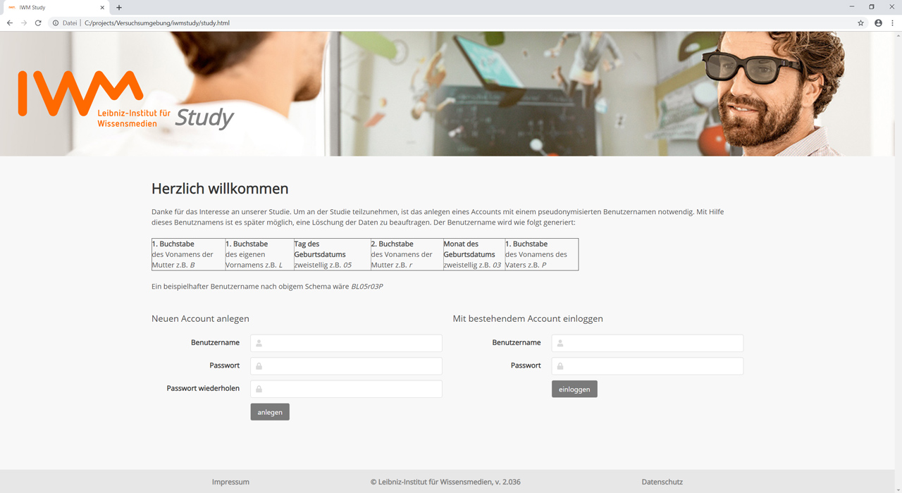
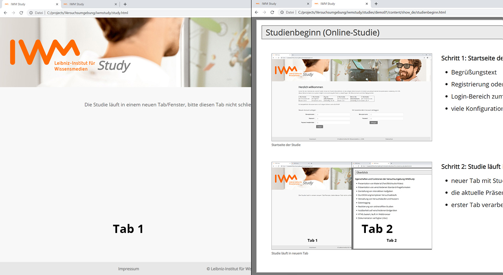

Studienbeginn (Online-Studie)

Startseite der Studie
Schritt 1: Startseite der Studie
Begrüßungstext
Registrierung oder Teilnahme ohne Account (konfigurierbar)
Login-Bereich zum Fortsetzen einer bereits begonnenen Studie
anpassbar, z.B. Text, Passwort, E-Mail, Gruppe...

Studie läuft in neuem Tab
Schritt 2: Studie läuft in neuem Tab
neuer Tab mit Studienmaterial wird im Vordergrund geöffnet
aktuelle Präsentation ist Studienmaterial und läuft in Tab 2
erster Tab verarbeitet die Studie und muss geöffnet bleiben